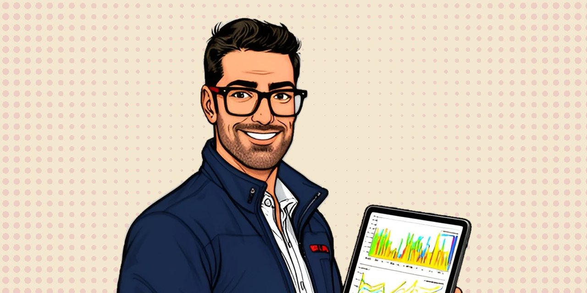
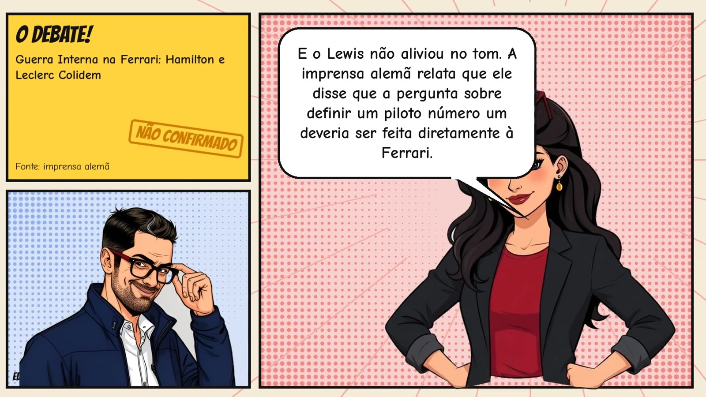
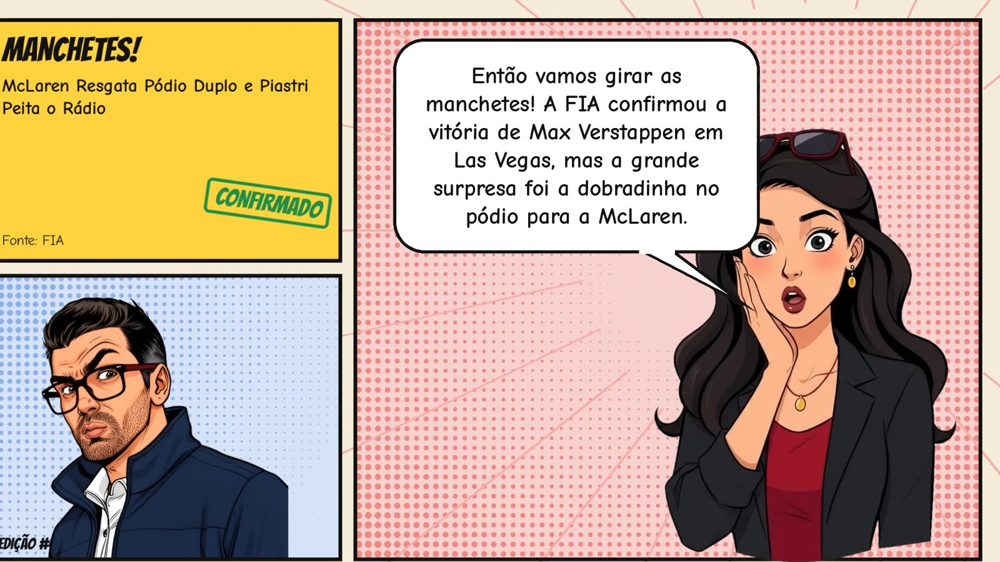
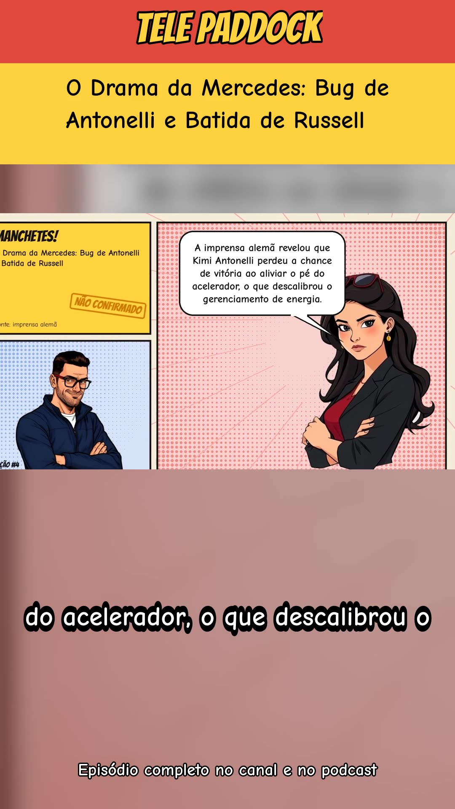

O Estrategista
Fala de regulamento, estratégia de pneus, dados de volta e decisões de box, sempre com o número na mão.
O Estrategista lê a telemetria e a Insider conta o que se fala no paddock. Episódios de 10 a 18 minutos no YouTube, no Spotify, no Apple Podcasts e no Deezer.
23 de novembro de 2026, 14 min 23 s.
VERSTAPPEN HUMILHA RUSSELL? KARMA EM LAS VEGAS, GUERRA NA FERRARI E O FUTURO DE RAFAEL CÂMARA

O cartão de cada assunto mostra quem publicou e um carimbo: confirmado quando a fonte é oficial, não confirmado quando só a imprensa noticiou.

São personagens fictícios, com vozes e imagens geradas por inteligência artificial. Os fatos que eles comentam vêm de notícias publicadas.

Fala de regulamento, estratégia de pneus, dados de volta e decisões de box, sempre com o número na mão.
Traz as rivalidades, as polêmicas dos boxes e o que os torcedores estão dizendo nas redes.
Como as notícias são escolhidas
Os episódios partem de notícias da imprensa do mundo todo e dos sites oficiais da Fórmula 1 e da FIA. Quando só um jornal publicou, o episódio diz qual foi e marca a notícia como não confirmada.
O episódio completo sai no YouTube e nos apps de podcast. Os cortes de um minuto saem nas redes.

Não. São personagens fictícios, com vozes e imagens geradas por inteligência artificial, e não imitam nenhum jornalista ou piloto.
De notícias publicadas pela imprensa e pelos sites oficiais. A fonte aparece na tela e na descrição de cada episódio.
Não. O Tele Paddock é independente, sem vínculo com a Fórmula 1, a FIA, as equipes ou os pilotos.
Cada episódio termina com uma pergunta. Responda nos comentários do YouTube: as respostas entram no episódio seguinte.